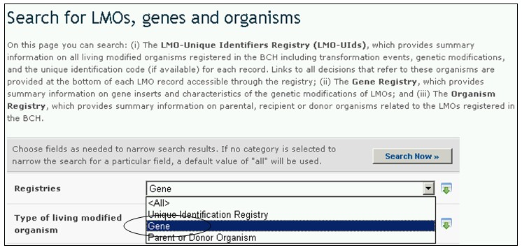

Реестр генов содержит сведения о генных вставках и характеристиках модификаций ЖИО. Записи данного реестра предоставляют следующую информацию:
1) название гена;
2) интродуцированные или измененные характеристики;
3) продукт гена;
4) функция гена;
5) информация об организме-доноре (включая сведения о пункте сбора или приобретения организма-донора);
6) дополнительная информация.
Принято, что названия генов выделяются курсивом, а белки, являющиеся продуктами этих генов, имеют те же названия, но не выделяются курсивом. Например, cry1A(b) ген производит Cry1A(b) белок.

Рисунок 44